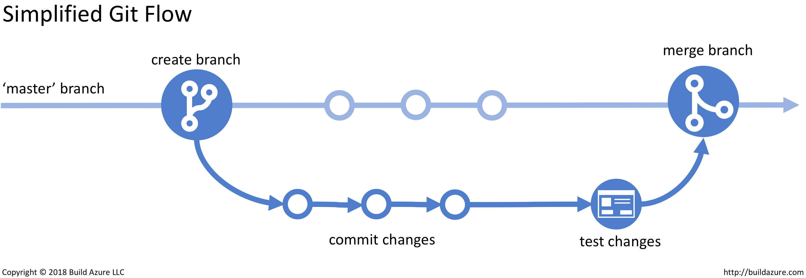

Reproducible R
Tips & Tricks to make your projects reproducible
Aug 12, 2025
About me
Bioinformatics Software Engineer for cancer research

PhD from the University of Michigan
Volunteered with Girls Who Code & Software Carpentry

Views are my own and do not represent my employer
Software Engineering for Genomic Data Science
TODO
Data Science & Software Development
TODO
Defining reproducibility
- Reproducibilty is the ability to get the same result with the same data set and the same methods
- Replicability is the ability to get the same result with a different data set using the same methods
| Methods | Same data | Different data |
|---|---|---|
| Same methods | Reproducibility | Replicability |
| Different methods | Robustness | Generalizability |
Schloss PD. 2018. 10.1128/mBio.00525-18.
Why care about reproducibility?
TODO
Reproducibility is a spectrum
If you tried to reproduce a well-known research paper in your field:
- Would you come to the same conclusion?
- How many hours of work would it take you to repeat the analysis?
- How close would the statistical estimates be between the original and the reproduction?
Is your work reproducible?
For peers in your field?
For your colleagues?
For yourself?
Reproducibility is all about communicating with your collaborators
How to make your work reproducible
- Project-oriented organization
- Describe the analysis workflow
- Define the dependencies
- Version control & sharing
Types of (R) projects
- One-off analysis script or notebook
- Complex analysis with multiple scripts
- R package
Types of (R) projects
- One-off analysis script or notebook
- Complex analysis with multiple scripts
- R package
Project-oriented organization
Scenario: you are given a new project with a dataset to analyze. You create a new R Markdown / Quarto / Jupyter notebook for initial exploratory analysis.
The initial results look promising, so you continue to pursue the analysis.
After a while, your original notebook gets messy. There are steps for data cleaning, filtering, statistical analyses, and visualization all over the place and out of order.
Maybe you put your notebook in the same folder on your computer as another related but different analysis. But those projects have diverged to answer very different questions, and it’s getting hard to keep track of which files go with which project.
It’s time to get organized!
Project-oriented organization: keep it contained
- Create a separate, self-contained folder for each project.
- Use a consistent subdirectory structure within the project folder
~/projects/lung-cancer
├── clinical-metadata-lung.csv
├── correlation-liver.R
├── exploratory.Rmd
├── heatmap-2.png
├── heatmap-2.R
├── heatmap.png
├── heatmap.R
├── linreg.R
├── liver-ATAC-peaks.bed
├── metadata-liver.csv
└── RNAseq-counts.csv~/projects
├── liver-cancer
│ ├── correlation-liver.R
│ ├── exploratory.Rmd
│ ├── heatmap-2.png
│ ├── heatmap-2.R
│ ├── liver-ATAC-peaks.bed
│ └── metadata-liver.csv
└── lung-cancer
├── clinical-metadata-lung.csv
├── heatmap.png
├── heatmap.R
├── linreg.R
└── RNAseq-counts.csvProject-oriented organization: keep it contained
- Create a separate, self-contained folder for each project.
- Use a consistent subdirectory structure within the project folder
~/projects
├── liver-cancer
│ ├── correlation-liver.R
│ ├── exploratory.Rmd
│ ├── heatmap-2.png
│ ├── heatmap-2.R
│ ├── liver-ATAC-peaks.bed
│ └── metadata-liver.csv
└── lung-cancer
├── clinical-metadata-lung.csv
├── heatmap.png
├── heatmap.R
├── linreg.R
└── RNAseq-counts.csv~/projects
├── liver-cancer
│ ├── data
│ │ ├── liver-ATAC-peaks.bed
│ │ └── metadata-liver.csv
│ ├── figures
│ │ └── heatmap-2.png
│ ├── notebooks
│ │ └── exploratory.Rmd
│ └── scripts
│ ├── correlation-liver.R
│ └── heatmap-2.R
└── lung-cancer
├── data
│ ├── clinical-metadata-lung.csv
│ └── RNAseq-counts.csv
├── figures
│ └── heatmap.png
├── notebooks
└── scripts
├── heatmap.R
└── linreg.RProject-oriented organization: use RStudio projects
Create .Rproj files with RStudio (File > New project)
~/projects
├── liver-cancer
│ ├── data
│ ├── figures
│ ├── liver-cancer.Rproj
│ ├── notebooks
│ └── scripts
└── lung-cancer
├── data
├── figures
├── lung-cancer.Rproj
├── notebooks
└── scriptsRproj contains project-specific settings and tells RStudio where the root of your project is
R projects enable better file path resolution
Before: ~/projects/lung-cancer/notebooks/heatmap.Rmd
R projects enable better file path resolution
With Rproj:
lung-cancer
├── data
│ └── RNAseq-counts.csv
├── lung-cancer.Rproj
└── notebooks
└── heatmap.Rmdlibrary(here)
#> here() starts at /Users/myusername/projects/lung-cancer/
library(tidyverse)
rna_counts <- read_csv(here('data','RNAseq-counts.csv'))Rproj tells RStudio that ~/projects/lung-cancer/ is the project root.
Project-oriented organization makes your projects portable
- With a consistent directory structure, you and your colleagues will be able to locate files they’re looking for.
- With Rproj files + relative paths, others can run your code on their own computer without editing the code to change the file paths.
Describe the analysis workflow
In what order should you run these scripts?
lung-cancer/scripts
├── clean-data.R
├── feature-importance.R
├── heatmap.R
├── model-training.R
├── plot-performance.R
└── preprocess-data.RDescribe the analysis workflow
You could rename the files with numbers
lung-cancer/scripts
├── 0_clean-data.R
├── 1_preprocess-data.R
├── 2_heatmap.R
├── 3_model-training.R
├── 4_plot-performance.R
└── 5_feature-importance.RDescribe the analysis workflow
Or perhaps describe the order in a README file (README.md)
The scripts were run in the following order:
- clean-data.R
- preprocess-data.R
- heatmap.R
- model-training.R
- plot-performance.R
- feature-importance.R
Describe Automate the analysis workflow
Create a script to orchestrate the analysis
Automate the analysis workflow
For complex analyses, workflow managers orchestrate the execution and scale resources up or down as needed
Automate the analysis workflow
For complex analyses, workflow managers orchestrate the execution and scale resources up or down as needed
- Snakemake
- Nextflow
- drake
Describe the dependencies
If you use any packages outside of base R, you’ll need to know which packages and (possibly) which versions
- Look for
library()in your scripts and direct calls such asdplyr::filter() - List them in your README file
Dependencies
This project requires R >= 4.0 and the following packages:
- dplyr
- ggplot2
- here
- readr
- tidymodels
Describe the dependencies in a DESCRIPTION file
Your project doesn’t have to be an R package to use a DESCRIPTION file. Create one with usethis::use_description(check_name=FALSE):
Package: repro-r
Title: What the Package Does (One Line, Title Case)
Version: 0.0.0.9000
Authors@R:
person("First", "Last", , "first.last@example.com", role = c("aut", "cre"))
Description: What the package does (one paragraph).
License: `use_mit_license()`, `use_gpl3_license()` or friends to pick a
license
Encoding: UTF-8
Roxygen: list(markdown = TRUE)
RoxygenNote: 7.3.2Describe the dependencies in a DESCRIPTION file
Add packages to your DESCRIPTION file with usethis::use_package('packagename')
Package: repro-r
Title: What the Package Does (One Line, Title Case)
Version: 0.0.0.9000
Authors@R:
person("First", "Last", , "first.last@example.com", role = c("aut", "cre"))
Description: What the package does (one paragraph).
License: `use_mit_license()`, `use_gpl3_license()` or friends to pick a
license
Encoding: UTF-8
Roxygen: list(markdown = TRUE)
RoxygenNote: 7.3.2
Imports:
dplyr,
ggplot2,
lubridate (>= 1.2)Install your project’s dependencies with devtools::install_deps()
Describe the dependencies with an environment manager
If you need…
- Different package versions for different projects
- Packages for other languages too 🐍
An environment manager will help!
Describe the dependencies with an environment manager
- renv - primarily for R but can also handle Python. Works seamlessly with DESCRIPTION.
renv.lock - conda, mamba - python, R, CLI tools, anything you can find at anaconda.org.
environment.yml
- docker & singularity containers - if you need to control the operating system too
Describe the dependencies with an environment manager
And document how to restore the environment in your README
Dependencies
Dependencies are listed in DESCRIPTION and can be installed with renv::restore()
Dependencies
Dependencies are listed in environment.yml and can be installed with mamba env create -f environment.yml
Use version control
- Help yourself keep track of how your project changes over time
- Facilitate collaboration with others
Use version control: git + GitHub
- git is a command line program for tracking changes in a project. Each project is its own repository (“repo”) which has a history of changes.
- GitHub is a website that hosts git repositories for sharing and collaboration.

Use version control: git + GitHub
The only git commands you strictly need
git init– create a new git repo in your project directorygit add <files>– add files to be tracked by gitgit commit -m 'add heatmap script'– commit changes to the repo history
The only git commands you strictly need if you use github
git init– create a new git repo in your project directorygit add <files>– add files to be tracked by gitgit commit -m 'add heatmap script'– commit changes to the repo historygit push– upload commits from your local repo to githubgit pull– download commits from github to your local repo
The only git commands you strictly need if you use github for collaboration
git init– create a new git repo in your project directorygit add <files>– add files to be tracked by gitgit commit -m 'add heatmap script'– commit changes to the repo historygit push– upload commits from your local repo to githubgit pull– download commits from github to your local repogit branch– create a new branchgit switch– switch to a branch- Use GitHub on the web to combine branches with pull requests
Use version control: git + GitHub
Conclusion
- Project-oriented organization
- Describe the analysis workflow
- Define the dependencies
- Version control & sharing
Conclusion
- Project-oriented organization
- Describe the analysis workflow
- Define the dependencies
- Version control & sharing
- Document everything
My analysis is simple, do I really need all this?
No! Pick and choose what works for you and your peers
How to make your R projects reproducible
Project-oriented organization
organize into directories for code, data, figures, notebooks
Every paper is a self-contained directory/folder.
Put all of the figures, code, & data that go into a paper in one place. Keeps you organized while you’re working on the project. Makes it easier to find what you’re looking for later on.
Use
.Rprojfiles: Enables relative paths rather than absolute paths to files.{here}
Describe the analysis workflow
- Describe steps to go from raw data through visualizations
- Even better: automate the workflow
- ideally, include a driver script / orchestrator. main.R, bash script, makefile, drake, Snakemake workflow, nextflow workflow
Define the dependencies
- list in the readme, description file, optionally use renv or conda
Version control & sharing
Secret bonus tip: document! You’ve already been doing it if you created a readme file, described why you made certain analysis choices in your notebooks, etc